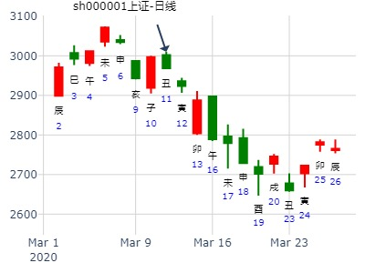

占事：002713东易日盛未来一个月的走势
公历起卦时间：2015年1月11日11时1分 (手工指定)
干支：甲午年 丁丑月 丁亥日 丙午时 （日空：午未）
神煞：驿马－巳 桃花－子 日禄－午 贵人－酉，亥
离宫：风水涣 离宫：风水涣
六神 伏神 本 卦 变 卦
青龙 父母辛卯木 ▅▅▅▅▅ 父母辛卯木 ▅▅▅▅▅
玄武 兄弟辛巳火 ▅▅▅▅▅ 世 兄弟辛巳火 ▅▅▅▅▅ 世
白虎 妻财己酉金 子孙辛未土 ▅▅ ▅▅ 子孙辛未土 ▅▅ ▅▅
腾蛇 官鬼己亥水 兄弟戊午火 ▅▅ ▅▅ 兄弟戊午火 ▅▅ ▅▅
勾陈 子孙戊辰土 ▅▅▅▅▅ 应 子孙戊辰土 ▅▅▅▅▅ 应
朱雀 父母戊寅木 ▅▅ ▅▅ 父母戊寅木 ▅▅ ▅▅
涨
36.5一个月大涨18元 50%
飞神月破旬空无力。空下伏神，易于引拢。
世爻兄弟日破，不克财。
23日亥跌，因为流日旬空辰巳冲了巳。
占事：1.15上证收盘走势？
公历起卦时间：2021年1月15日8时7分 (电脑自动)
干支：庚子年 己丑月 癸亥日 丙辰时 （日空：子丑）
神煞：驿马－巳 桃花－子 日禄－子 贵人－卯，巳
离宫：风水涣
六神 伏神 本 卦
白虎 父母辛卯木 ▅▅▅▅▅
螣蛇 兄弟辛巳火 ▅▅▅▅▅ 世
勾陈 财酉： 孙 辛未土 ▅▅ ▅▅
朱雀 官鬼己亥水 兄弟戊午火 ▅▅ ▅▅
青龙 子孙戊辰土 ▅▅▅▅▅ 应
玄武 父母戊寅木 ▅▅ ▅▅
占事: 002716金贵银业在本年度的走势 安圆圆
时间: 2018-01-18
干支: 丁酉年癸丑月庚戌日丁亥时 (旬空: 寅卯 )
涣静卦
六神 伏神 本 卦
腾蛇 ▅▅▅▅▅ 父母卯木
勾陈 ▅▅▅▅▅ 兄弟巳火 世
朱雀 妻财酉金▅▅ ▅▅ 子孙未土
青龙 官鬼亥水▅▅ ▅▅ 兄弟午火
玄武 ▅▅▅▅▅ 子孙辰土 应
白虎 ▅▅ ▅▅ 父母寅木
涣静卦_000751_2015-01-23
锌业股份今天至下周行情
起卦方式：手动摇卦
公历时间：2015年1月23日7时44分
干 支：甲午年 丁丑月 己亥日 戊辰时
旬 空：辰巳 申酉 (辰巳) 戌亥
离宫：风水涣
六神 伏 神 【本 卦】
勾陈 ▄▄▄▄▄ 父母辛卯木
朱雀 ▄▄▄▄▄ 兄弟辛巳火 世
青龙 妻财己酉金 ▄▄ ▄▄ 子孙辛未土
玄武 官鬼己亥水 ▄▄ ▄▄ 兄弟戊午火
白虎 ▄▄▄▄▄ 子孙戊辰土 应
螣蛇 ▄▄ ▄▄ 父母戊寅木
跌 一路下跌
兄弟被冲实。四爻子孙月破。结果反而跌。
占事：09年股市 己丑年（09年）股市手摇卦
公历起卦时间：2009年1月31日15时11分 (手工指定)
干支：戊子年 乙丑月 丙子日 丙申时 （日空：申酉）
时间: 2009-01-31
干支: 戊子年乙丑月丙子日 (旬空: 申酉 )
神煞：驿马－寅 桃花－酉 日禄－巳 贵人－酉，亥
涣静卦
六神 伏神 本 卦
青龙 ▅▅▅▅▅ 父母卯木
玄武 ▅▅▅▅▅ 兄弟巳火 世
白虎 妻财酉金▅▅ ▅▅ 子孙未土
腾蛇 官鬼亥水▅▅ ▅▅ 兄弟午火
勾陈 ▅▅▅▅▅ 子孙辰土 应
朱雀 ▅▅ ▅▅ 父母寅木
教授-----良信电器2月走势 方式：手工指定
公历：2015年2月1日11时25分星期日北京时间
干支：甲午年丁丑月戊申日戊午时
旬空：辰巳 申酉 寅卯 子丑
离：风水涣
六神 伏 神 【本 卦】
朱雀 ▅▅▅▅▅父母辛卯木(
青龙 ▅▅▅▅▅兄弟辛巳火(
玄武 妻财己酉金(大驿土)▅▅ ▅▅子孙辛未土
白虎 官鬼己亥水(平地木)▅▅ ▅▅兄弟戊午火
螣蛇 ▅▅▅▅▅子孙戊辰土(
勾陈 ▅▅ ▅▅父母戊寅木(
-------------------------------
丑日子孙日月破。不当冲飞露伏。大跌。
占事：甲午年创业板波段研究。
作者：燕山月 2014-02-16
干支：甲午年 丙寅月 戊午日 丁巳时 （日空：子丑）
离宫：风水涣
六神 伏神 本 卦
朱雀 父母辛卯木 ▅▅▅▅▅
青龙 兄弟辛巳火 ▅▅▅▅▅ 世
玄武 妻财己酉金 子孙辛未土 ▅▅ ▅▅
白虎 官鬼己亥水 兄弟戊午火 ▅▅ ▅▅
腾蛇 子孙戊辰土 ▅▅▅▅▅ 应
勾陈 父母戊寅木 ▅▅ ▅▅
参见水易缘年卦： 风水涣静卦
水易缘手摇
占事: 乙未年卦走势
公历时间：2015年2月15日18时5分
干支：乙未年 戊寅月 壬戌日 己酉时
旬空：辰巳 申酉 子丑 寅卯
离宫：风水涣
六神 伏 神 【本 卦】
白虎 兄弟己巳火 ▄▄▄▄▄ 父母辛卯木
螣蛇 子孙己未土 ▄▄▄▄▄ 兄弟辛巳火 世
勾陈 妻财己酉金 ▄▄ ▄▄ 子孙辛未土
朱雀 官鬼己亥水 ▄▄ ▄▄ 兄弟戊午火
青龙 子孙己丑土 ▄▄▄▄▄ 子孙戊辰土 应
玄武 父母己卯木 ▄▄ ▄▄ 父母戊寅木
用深圳综指
世爻入墓，还可涨一段。
深证卯月走势——乾隆币卦 红牛
深证卯月走势 <br>
公历时间：2016年3月5日22时46分<br>
干 支：丙申年 辛卯月 丙戌日 己亥时
旬 空：辰巳 午未 (午未) 辰巳
离宫：风水涣<br>
六神 伏 神 【本 卦】
青龙 ▄▄▄▄▄ 父母辛卯木
玄武 ▄▄▄▄▄ 兄弟辛巳火 世
白虎 妻财己酉金 ▄▄ ▄▄ 子孙辛未土
螣蛇 官鬼己亥水 ▄▄ ▄▄ 兄弟戊午火
勾陈 ▄▄▄▄▄ 子孙戊辰土 应
朱雀 ▄▄ ▄▄ 父母戊寅木
测沪深股市今日走势 ：（3月8日）起卦方式：手动摇卦
公历时间：2016年3月8日6时3442分
干 支：丙申年 辛卯月 己丑日 丁卯时
旬 空：辰巳 午未 (午未) 戌亥
离宫：风水涣
六神 伏 神 【本 卦】
勾陈 ▄▄▄▄▄ 父母辛卯木
朱雀 ▄▄▄▄▄ 兄弟辛巳火 世
青龙 妻财己酉金 ▄▄ ▄▄ 子孙辛未土
玄武 官鬼己亥水 ▄▄ ▄▄ 兄弟戊午火
白虎 ▄▄▄▄▄ 子孙戊辰土 应
螣蛇 ▄▄ ▄▄ 父母戊寅木
测3月12日上证指数涨跌
庚子 己卯 癸丑 癸亥 (日空:寅卯 时空:子丑)
庚子年二月十八(2020/03/11 22:50:19)
风水涣
白虎 父母卯木 ／
腾蛇 兄弟巳火 ／ 离
妻财酉金：勾陈 子孙未土 ∥
官鬼亥水：朱雀 兄弟午火 ∥
青龙 子孙辰土 ／ 应
玄武 父母寅木 ∥

测2020.3.12上证收盘十位数zx？
占事：没填
公历起卦时间：2020年3月12日11时28分 (电脑自动)
干支：庚子年 己卯月 甲寅日 庚午时 （日空：子丑）
神煞：驿马－申 桃花－卯 日禄－寅 贵人－丑，未
离宫：风水涣
六神 伏神 本 卦
玄武 父母辛卯木 ▅▅▅▅▅
白虎 兄弟辛巳火 ▅▅▅▅▅ 世
螣蛇 妻财己酉金 子孙辛未土 ▅▅ ▅▅
勾陈 官鬼己亥水 兄弟戊午火 ▅▅ ▅▅
朱雀 子孙戊辰土 ▅▅▅▅▅ 应
青龙 父母戊寅木 ▅▅ ▅▅

占事：3月19日癸亥日沪市大盘指数涨跌！
起卦方式：手工指定
公历时间：2009年3月18日17时0分 星期三
干支：己丑年 丁卯月 壬戌日 己酉时 (旬空：子丑)
神煞：驿马—申 桃花—卯 日禄—亥 贵人—卯，巳
离宫：风水涣
六神 伏 神 【本 卦】
白虎 ▅▅▅▅▅ 父母辛卯木
螣蛇 ▅▅▅▅▅ 兄弟辛巳火 世
勾陈 妻财己酉金 ▅▅ ▅▅ 子孙辛未土
朱雀 官鬼己亥水 ▅▅ ▅▅ 兄弟戊午火
青龙 ▅▅▅▅▅ 子孙戊辰土 应
玄武 ▅▅ ▅▅ 父母戊寅木
财伏子下！官伏兄下！世应生！低开高走！涨！幅度1.8%左右
天机六爻排盘，在线摇卦，by 王晖
2024年3月23日 21:41
占问：159866日经etf近半年行情如何？
甲辰年 丁卯月 丙戌日 己亥时 (旬空：午未)
本卦：风水涣/离宫
变卦：风水涣/离宫
龙 父卯 — 父卯 —
玄 兄巳 — 世 兄巳 — 世
虎 财酉 孙未 -- 孙未 --
蛇 官亥 兄午 -- 兄午 --
勾 孙辰 — 应 孙辰 — 应
雀 父寅 -- 父寅 --
涣静卦,医药ETF未来2周？风生水起
时间: 2023-03-31
干支: 癸卯年乙卯月戊子日 (旬空: 午未 )
涣静卦
六神 伏神 本 卦
朱雀 ▅▅▅▅▅ 父母卯木
青龙 ▅▅▅▅▅ 兄弟巳火 世
玄武 妻财酉金▅▅ ▅▅ 子孙未土
白虎 官鬼亥水▅▅ ▅▅ 兄弟午火
腾蛇 ▅▅▅▅▅ 子孙辰土 应
勾陈 ▅▅ ▅▅ 父母寅木
占事：上证指数下周走势
公历起卦时间：2016年4月10日17时35分 (在线摇卦)
农历：丙申年三月初四日酉时
干支：丙申年 壬辰月 壬戌日 己酉时 （日空：子丑）
神煞：驿马－申 桃花－卯 日禄－亥 贵人－卯，巳
离宫：风水涣
六神 伏神 本 卦
白虎 父母辛卯木 ▅▅▅▅▅
腾蛇 兄弟辛巳火 ▅▅▅▅▅ 世
勾陈 妻财己酉金 子孙辛未土 ▅▅ ▅▅
朱雀 官鬼己亥水 兄弟戊午火 ▅▅ ▅▅
青龙 子孙戊辰土 ▅▅▅▅▅ 应
玄武 父母戊寅木 ▅▅ ▅▅
申日暴跌，冲寅木暗动。
京东方未来各月走势？
风水涣静卦。
时间: 2017-04-10 21时9分
干支: 丁酉年甲辰月丁卯日 (旬空: 戌亥 )
涣静卦
六神 伏神 本 卦
青龙 ▅▅▅▅▅ 父母卯木
玄武 ▅▅▅▅▅ 兄弟巳火 世
白虎 妻财酉金▅▅ ▅▅ 子孙未土
腾蛇 官鬼亥水▅▅ ▅▅ 兄弟午火
勾陈 ▅▅▅▅▅ 子孙辰土 应
朱雀 ▅▅ ▅▅ 父母寅木
占事：A＋H股 411-430 （相当于测港股通概念板块）
以600377--000898龙头代替
公历时间：2014年4月10日16时20分
干 支：甲午年 戊辰月 辛亥日 丙申时
旬 空：辰巳 戌亥 (寅卯) 辰巳
离宫：风水涣
六神 伏 神 【本 卦】
螣蛇 ▄▄▄▄▄ 父母辛卯木
勾陈 ▄▄▄▄▄ 兄弟辛巳火 世
朱雀 妻财己酉金 ▄▄ ▄▄ 子孙辛未土
青龙 官鬼己亥水 ▄▄ ▄▄ 兄弟戊午火
玄武 ▄▄▄▄▄ 子孙戊辰土 应
白虎 ▄▄ ▄▄ 父母戊寅木
两个龙头股11日即见顶。
世爻日破，照样跌，兄弟持世要月破旬空入墓才行。
占事：601699潞安环能巳月走势
公历起卦时间：2016年5月4日21时11分 (在线摇卦)
干支：丙申年 壬辰月 丙戌日 己亥时 （日空：午未）
神煞：驿马－申 桃花－卯 日禄－巳 贵人－酉，亥
离宫：风水涣
六神 伏神 本 卦
青龙 父母辛卯木 ▅▅▅▅▅
玄武 兄弟辛巳火 ▅▅▅▅▅ 世
白虎 妻财己酉金 子孙辛未土 ▅▅ ▅▅
腾蛇 官鬼己亥水 兄弟戊午火 ▅▅ ▅▅
勾陈 子孙戊辰土 ▅▅▅▅▅ 应
朱雀 父母戊寅木 ▅▅ ▅▅
占事：600158中体产业今天涨跌
公历起卦时间：2014年5月29日8时20分 (电脑自动)
干支：甲午年 己巳月 庚子日 庚辰时 （日空：辰巳）
神煞：驿马－寅 桃花－酉 日禄－申 贵人－丑，未
离宫：风水涣
六神 伏神 本 卦
腾蛇 父母辛卯木 ▅▅▅▅▅
勾陈 兄弟辛巳火 ▅▅▅▅▅ 世
朱雀 妻财己酉金 子孙辛未土 ▅▅ ▅▅
青龙 官鬼己亥水 兄弟戊午火 ▅▅ ▅▅
玄武 子孙戊辰土 ▅▅▅▅▅ 应
白虎 父母戊寅木 ▅▅ ▅▅
----------------------------
大跌将近跌停。兄弟持世但是旬空，本为喜。
无奈子日冲午火兄弟暗动克财。大跌。
5月31日沪市涨跌？
公历：2016年5月30日19时42分，星期一。
农历：丙申年 四月 廿四日 戌时。
干支：丙申年 癸巳月 壬子日 庚戌时 (卦身：戌)
主变卦 风水涣(离宫) [空亡:寅、卯]
白虎 ▅▅▅▅▅ 父母辛卯木
螣蛇 ▅▅▅▅▅ 兄弟辛巳火 世
勾陈 妻财己酉金 ▅▅ ▅▅ 子孙辛未土
朱雀 官鬼己亥水 ▅▅ ▅▅ 兄弟戊午火
青龙 ▅▅▅▅▅ 子孙戊辰土 应
玄武 ▅▅ ▅▅ 父母戊寅木
占问：中国石油601857股价未来6个月行情？
天机六爻排盘
2023年5月31日 12:31
干支：癸卯年 丁巳月 己丑日 庚午时 (旬空：午未)
涣静卦
六神 伏神 本 卦
勾陈 ▅▅▅▅▅ 父母卯木
朱雀 ▅▅▅▅▅ 兄弟巳火 世
青龙 妻财酉金▅▅ ▅▅ 子孙未土
玄武 官鬼亥水▅▅ ▅▅ 兄弟午火
白虎 ▅▅▅▅▅ 子孙辰土 应
腾蛇 ▅▅ ▅▅ 父母寅木
601328交通银行明日价格？ (手工指定)
干支：乙未年 壬午月 甲子日 乙亥时 （日空：戌亥）
离宫：风水涣
六神 伏神 本 卦
玄武 父母辛卯木 ▅▅▅▅▅
白虎 兄弟辛巳火 ▅▅▅▅▅ 世
腾蛇 妻财己酉金 子孙辛未土 ▅▅ ▅▅
勾陈 官鬼己亥水 兄弟戊午火 ▅▅ ▅▅
朱雀 子孙戊辰土 ▅▅▅▅▅ 应
青龙 父母戊寅木 ▅▅ ▅▅
断小涨

占事：7月10日大盘走势？
公历起卦时间：2015年7月9日17时30分 (手工指定六爻)
干支：乙未年 癸未月 丙戌日 丁酉时 （日空：午未）
神煞：驿马－申 桃花－卯 日禄－巳 贵人－酉，亥
离宫：风水涣
六神 伏神 本 卦
青龙 父母卯木 ▅▅▅▅▅
玄武 兄弟巳火 ▅▅▅▅▅ 世
白虎 妻财酉金 子孙未土 ▅▅ ▅▅
螣蛇 官鬼亥水 兄弟午火 ▅▅ ▅▅
勾陈 子孙辰土 ▅▅▅▅▅ 应
朱雀 父母寅木 ▅▅ ▅▅
亥官值日冲克巳兄，正是行政措施压制空方，但财伏子空，多方也无力
盘中起伏大，下探一度跌幅有120左右，未时填子生财
尾市阳
兄子财形成连生，不排除涨幅偏大[/post]
九戒 占事：002723金莱特 710
公历时间：2014年7月10日8时27分
干 支：甲午年 辛未月 壬午日 甲辰时
旬 空：辰巳 戌亥 (申酉) 寅卯
离宫：风水涣
六神 伏 神 【本 卦】
白虎 ▄▄▄▄▄ 父母辛卯木
螣蛇 ▄▄▄▄▄ 兄弟辛巳火 世
勾陈 妻财己酉金 ▄▄ ▄▄ 子孙辛未土
朱雀 官鬼己亥水 ▄▄ ▄▄ 兄弟戊午火
青龙 ▄▄▄▄▄ 子孙戊辰土 应
玄武 ▄▄ ▄▄ 父母戊寅木
兄弟世爻巳火在午日为帝旺，仍是跌。
占事: : 股票没行情，该做啥，风水涣静卦。
日期 : 2019-07-18
干支: 己亥年辛未月丙辰日丁酉时 (旬空: 子丑 )
涣静卦
六神 伏神 本 卦
青龙 ▅▅▅▅▅ 父母卯木
玄武 ▅▅▅▅▅ 兄弟巳火 世
白虎 妻财酉金▅▅ ▅▅ 子孙未土
腾蛇 官鬼亥水▅▅ ▅▅ 兄弟午火
勾陈 ▅▅▅▅▅ 子孙辰土 应
朱雀 ▅▅ ▅▅ 父母寅木
下周股市大盘,乾隆通宝手摇
公历时间：2015年8月27日21时29分
干 支：乙未年 甲申月 乙亥日 丁亥时
旬 空：辰巳 午未 (申酉) 午未
离宫：风水涣
六神 伏 神 【本 卦】
玄武 ▄▄▄▄▄ 父母辛卯木
白虎 ▄▄▄▄▄ 兄弟辛巳火 世
螣蛇 妻财己酉金 ▄▄ ▄▄ 子孙辛未土
勾陈 官鬼己亥水 ▄▄ ▄▄ 兄弟戊午火
朱雀 ▄▄▄▄▄ 子孙戊辰土 应
青龙 ▄▄ ▄▄ 父母戊寅木发
亥日世爻日破，涨。 子日兄弟午火日破，涨。
卯为父母值日，冲酉暗动，结果为T线。
巳日兄弟值日，又冲出官鬼亥水水暗动来制兄。低开高走。
占事: 9月大盘 阿辉
时间: 2018-09-08
干支: 戊戌年辛酉月癸卯日丁巳时 (旬空: 辰巳 )
涣静卦
六神 伏神 本 卦
白虎 ▅▅▅▅▅ 父母卯木
腾蛇 ▅▅▅▅▅ 兄弟巳火 世
勾陈 妻财酉金▅▅ ▅▅ 子孙未土
朱雀 官鬼亥水▅▅ ▅▅ 兄弟午火
青龙 ▅▅▅▅▅ 子孙辰土 应
玄武 ▅▅ ▅▅ 父母寅木
世爻旬空，还能涨一段
13-17 SEPT 沪深300 模拟予想
时间: 2010-09-12
干支: 庚寅年乙酉月乙丑日 (旬空: 戌亥 )
涣静卦
六神 伏神 本 卦
玄武 ▅▅▅▅▅ 父母卯木
白虎 ▅▅▅▅▅ 兄弟巳火 世
腾蛇 妻财酉金▅▅ ▅▅ 子孙未土
勾陈 官鬼亥水▅▅ ▅▅ 兄弟午火
朱雀 ▅▅▅▅▅ 子孙辰土 应
青龙 ▅▅ ▅▅ 父母寅木
子孙戊辰土，天干地支全是土，今天最强板块为房地产。
有色中的黄金概念排在概念排行中的第二。
行业板块
占事：今天大盘走势
时间: 2014-09-17
干支: 甲午年癸酉月辛卯日壬辰时 (旬空: 午未 )
涣静卦
六神 伏神 本 卦
腾蛇 ▅▅▅▅▅ 父母卯木
勾陈 ▅▅▅▅▅ 兄弟巳火 世
朱雀 妻财酉金▅▅ ▅▅ 子孙未土
青龙 官鬼亥水▅▅ ▅▅ 兄弟午火
玄武 ▅▅▅▅▅ 子孙辰土 应
白虎 ▅▅ ▅▅ 父母寅木
九戒
占事：506深深房 919-922
起卦方式：手动摇卦 易经股市论坛
公历时间：2014年9月19日17时12分
干 支：甲午年 癸酉月 癸巳日 辛酉时
旬 空：辰巳 戌亥 (午未) 子丑
离宫：风水涣
六神 伏 神 【本 卦】
白虎 ▄▄▄▄▄ 父母辛卯木
螣蛇 ▄▄▄▄▄ 兄弟辛巳火 世
勾陈 妻财己酉金 ▄▄ ▄▄ 子孙辛未土
朱雀 官鬼己亥水 ▄▄ ▄▄ 兄弟戊午火
青龙 ▄▄▄▄▄ 子孙戊辰土 应
玄武 ▄▄ ▄▄ 父母戊寅木
空下伏神。下周巳火空为兄弟世空，有利求财。
戌日冲空辰，有利上涨。
酉日出伏，上涨。
占事：600362江西铜业10月会不会涨？
王（除标明钱币卦外，一般为手动摇卦）
公历时间：2014年10月5日11时12分
干 支：甲午年 癸酉月 己酉日 庚午时 (寅卯)
离宫：风水涣
六神 伏 神 【本 卦】
勾陈 ▄▄▄▄▄ 父母辛卯木
朱雀 ▄▄▄▄▄ 兄弟辛巳火 世
青龙 妻财己酉金 ▄▄ ▄▄ 子孙辛未土
玄武 官鬼己亥水 ▄▄ ▄▄ 兄弟戊午火
白虎 ▄▄▄▄▄ 子孙戊辰土 应
螣蛇 ▄▄ ▄▄ 父母戊寅木
马后炮：兄弟持世，不空不破不墓，但不算旺。实际是涨不动。（此处定性以起卦月日为准） 流月戌月，虽然收兄弟入墓，但也冲了应爻辰月破。
真正大涨是亥月，兄弟月破而大涨。
占事：大盘一周内安全不？ （10月大盘）王
起卦方式：手动摇卦
公历时间：2014年10月9日11时19分
干 支：甲午年 甲戌月 癸丑日 戊午时 (寅卯)
离宫：风水涣
六神 伏 神 【本 卦】
白虎 ▄▄▄▄▄ 父母辛卯木
螣蛇 ▄▄▄▄▄ 兄弟辛巳火 世
勾陈 妻财己酉金 ▄▄ ▄▄ 子孙辛未土
朱雀 官鬼己亥水 ▄▄ ▄▄ 兄弟戊午火
青龙 ▄▄▄▄▄ 子孙戊辰土 应
玄武 ▄▄ ▄▄ 父母戊寅木
财爻酉金伏，后申酉日出伏才涨。
占事: 测下周10月11-15日大盘走势。
公历起卦时间：2010年10月9日14时0分 (手工指定)
干支：庚寅年 丙戌月 壬辰日 丁未时 （日空：午未）
离宫：风水涣 离宫：风水涣
六神 伏神 本 卦 变 卦
白虎 父母辛卯木 ▅▅▅▅▅ 父母辛卯木 ▅▅▅▅▅
腾蛇 兄弟辛巳火 ▅▅▅▅▅ 世 兄弟辛巳火 ▅▅▅▅▅ 世
勾陈 妻财己酉金 子孙辛未土 ▅▅ ▅▅ 子孙辛未土 ▅▅ ▅▅
朱雀 官鬼己亥水 兄弟戊午火 ▅▅ ▅▅ 兄弟戊午火 ▅▅ ▅▅
青龙 子孙戊辰土 ▅▅▅▅▅ 应 子孙戊辰土 ▅▅▅▅▅ 应
玄武 父母戊寅木 ▅▅ ▅▅ 父母戊寅木 ▅▅ ▅▅
马后炮：
涣静卦。暴涨。财伏子孙，子孙空，空下伏神易于引拔。
空下伏神，易于引拔。王假有庙，利涉大川，利贞
财得日月生助，飞神生助。
子孙值月日旺，一路涨。
丑日冲实飞神，冲高后小跌。
注：在出伏的未日还是大涨，并未应在飞神下而跌。与其它空下伏神不大一样。
第十四期10月27日到31日上证指数预测比赛
公历时间：2008年10月27日9时30分 星期一
干支：戊子年 壬戌月 庚子日 辛巳时 (旬空：辰巳)
神煞：驿马—寅 桃花—酉 日禄—申 贵人—寅，午
离宫：风水涣
六神 伏 神 【本 卦】
螣蛇 ▅▅▅▅▅ 父母辛卯木
勾陈 ▅▅▅▅▅ 兄弟辛巳火 世
朱雀 妻财己酉金 ▅▅ ▅▅ 子孙辛未土
青龙 官鬼己亥水 ▅▅ ▅▅ 兄弟戊午火
玄武 ▅▅▅▅▅ 子孙戊辰土 应
白虎 ▅▅ ▅▅ 父母戊寅木
这是大盘日K线的静卦!
求测人：yy 起卦方式：铜钱摇卦
占问事宜：大盘下周走势
起卦公历：2011年10月30日20时31分(北京时间)。
干支： 辛卯年 戊戌月 戊午日 壬戌时 (卦身：戌)
主变卦 风水涣(离宫) [空亡:子、丑]
朱雀 ━━━ 父母卯木
青龙 ━━━ 兄弟巳火 世
玄武 妻财酉金 ━ ━ 子孙未土
白虎 官鬼亥水 ━ ━ 兄弟午火
螣蛇 ━━━ 子孙辰土 应
勾陈 ━ ━ 父母寅木
一样是酉日大涨。出伏低开大涨。
涣静卦_sh000001_2018-11-04
占事：深圳下周走势7867
时间: 2018-11-04
干支: 戊戌年壬戌月庚子日 (旬空: 辰巳 )
涣静卦
六神 伏神 本 卦
腾蛇 ▅▅▅▅▅ 父母卯木
勾陈 ▅▅▅▅▅ 兄弟巳火 世
朱雀 妻财酉金▅▅ ▅▅ 子孙未土
青龙 官鬼亥水▅▅ ▅▅ 兄弟午火
玄武 ▅▅▅▅▅ 子孙辰土 应
白虎 ▅▅ ▅▅ 父母寅木
1、天同老师 亥月上证涨跌
公历时间：2020年11月8日9时25分
干 支：庚子年 丁亥月 乙卯日 辛巳时
旬 空：辰巳 午未 子丑 申酉
神 煞：驿马─巳 桃花─子 日禄─卯 贵人─子，申
离宫：风水涣
六神 伏 神 【本 卦】
玄武 ▄▄▄▄▄ 父母辛卯木
白虎 ▄▄▄▄▄ 兄弟辛巳火 世
螣蛇 妻财己酉金 ▄▄ ▄▄ 子孙辛未土
勾陈 官鬼己亥水 ▄▄ ▄▄ 兄弟戊午火
朱雀 ▄▄▄▄▄ 子孙戊辰土 应
青龙 ▄▄ ▄▄ 父母戊寅木

2019年12月2期股市预测大赛 含自选股
求测人：某人，男，庚申(1980年)，其它方式(起卦方式)
占问事宜：要问的事情
公历：2019年12月7日19时0分，星期六。
神煞：驿马-申 桃花-卯 干禄-巳 贵人-丑、未
干支：己亥年 丙子月 戊寅日 壬戌时 (卦身：戌)主
变卦 风水涣(离宫) [空亡:申、酉]
朱雀 ▅▅▅▅▅ 父母辛卯木
青龙 ▅▅▅▅▅ 兄弟辛巳火 世
玄武 妻财己酉金 ▅▅ ▅▅ 子孙辛未土
白虎 官鬼己亥水 ▅▅ ▅▅ 兄弟戊午火
螣蛇 ▅▅▅▅▅ 子孙戊辰土 应
勾陈 ▅▅ ▅▅ 父母戊寅木
尝试一种新的断法看看是否值得研究：周1，3，4跌，周2，5涨，周线涨

宁波银行[002142]今明几天价位？
公历起卦时间：2007年12月26日17时59分 (手工指定)
干支：丁亥年 壬子月 甲午日 癸酉时 （日空：辰巳）
神煞：驿马－申 桃花－卯 日禄－寅 贵人－丑，未
涣静卦
六神 伏神 本 卦
玄武 ▅▅▅▅▅ 父母卯木
白虎 ▅▅▅▅▅ 兄弟巳火 世
腾蛇 妻财酉金▅▅ ▅▅ 子孙未土
勾陈 官鬼亥水▅▅ ▅▅ 兄弟午火
朱雀 ▅▅▅▅▅ 子孙辰土 应
青龙 ▅▅ ▅▅ 父母寅木
占事：2012年股市大盘涨跌（上证）？
公历起卦时间：2011年12月30日16时7分 (手工指定)
干支：辛卯年 庚子月 己未日 壬申时 （日空：子丑）
神煞：驿马－巳 桃花－子 日禄－午 贵人－子，申
离宫：风水涣
六神 伏神 本 卦
勾陈 父母辛卯木 ▅▅▅▅▅
朱雀 兄弟辛巳火 ▅▅▅▅▅ 世
青龙 妻财己酉金 子孙辛未土 ▅▅ ▅▅
玄武 官鬼己亥水 兄弟戊午火 ▅▅ ▅▅
白虎 子孙戊辰土 ▅▅▅▅▅ 应
腾蛇 父母戊寅木 ▅▅ ▅▅